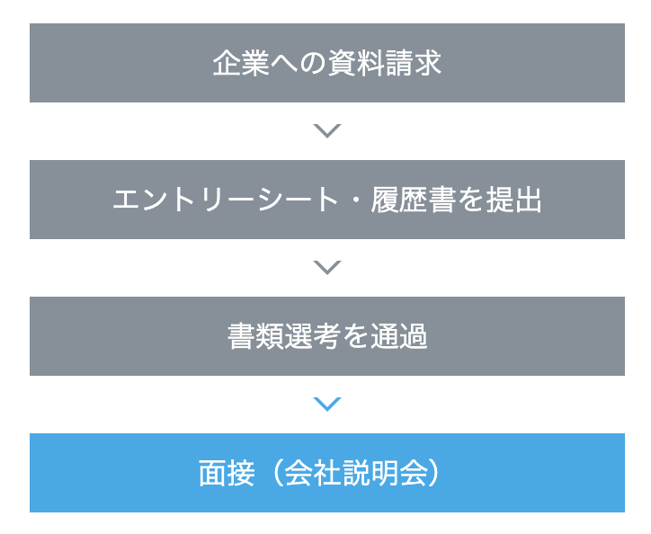
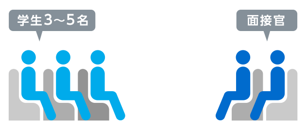
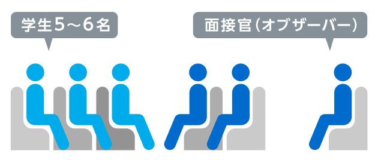
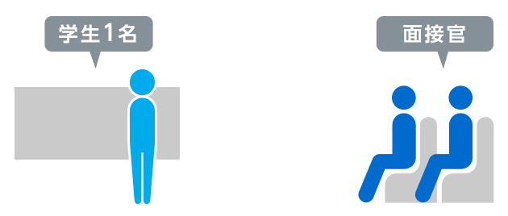
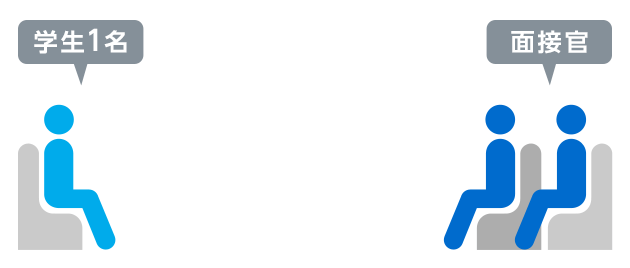

【就活における面接のマナー】
〜面接とは〜

企業で採用する人材を判断する上で、面接はとても重要視されている。
企業が実際に学生と話をする機会を設けるには限度があるため、多くの企業が書類選考・適性検査・筆記試験などを事前に行い、
そこで人選された一定数の学生だけが面接に臨める。
集団面接の場合

・一次面接など、初期の段階の面接に多い形式。
・いかに自分の印象を残せるかがポイント。
・ほかの学生が回答しているときの態度や表情などの傾聴姿勢もチェックされることを忘れてはならない。
グループディスカッションの場合

あらかじめ与えられるテーマについて討議する形式。
リーダーシップ、協調性、論理性、配慮性などがチェックされます。
つまり、「人とのかかわり方」が見られている。不採用に多いのは、「発言しない人」や「人の話を聞かない人」。
プレゼンテーション型面接の場合

研究職や開発職など、職種別の採用で行われることが多い形式。
学生がどの程度のスキルか、この職種に適性はあるかなどを確認するために行われる。
生１名に対して面接官数人という場合が多く、その専門分野に対して理解がある人が面接官を務めていることが一般的。
個人面接の場合

学生１名に対して行われる。
一般的には、１名15～20分ほどかけて面接をする。